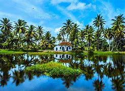
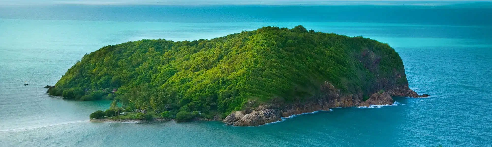

Alappuzha is also known by its former name Alleppey, is the administrative headquarters of Alappuzha district in the Indian state of Kerala.There are so many beautiful places like Kuttanad in this district. Alleppey is a city and a municipality in Kerala with an urban population of 174,164[1] and ranks third among the districts in literacy rate in the state. In 2016, the Centre for Science and Environment rated Alappuzha as the cleanest town in India.[2] Alappuzha is considered to be the oldest planned city in this region and the lighthouse built on the coast of the city is the first of its kind along the Laccadive Sea coas
Tourist attraction in Alappuzha!
Alappuzha beach
Alappuzha beach is one of the major tourist spot in Alappuzha town. Alappuzha Lighthouse situated near to the beach.[5] Beach is accessible through various town roads and an elevated highway will passing by the beach as part of Alappuzha bypass in order to preserve the beauty of the area.[6] Camel safaris was another attraction in beach which introduced a couple of years ago but it got banned by authorities.Alappuzha beach festival is a famous event organised as part of new year celebration. It's organised as an annual event in every year. Thousands of people gathers in the event includes from other disrict
The Alappuzha Lighthouse
The Alappuzha Lighthouse (or Alleppey Light) is situated in the coastal town of Alappuzha, Kerala. It was built in 1862 and is a major tourist attraction. Visitors are allowed between 1500 hours and 1630 hours on every weekday at an admission fee of 20 rupees for Indian citizens and 50 rupees for foreigners. This is the first of its kind in the Arabian sea coast of Kerala.Alappuzha, a part of Travancore, was ruled by Rajas of Erstwhile Travancore before India's independence. After the arrival of the Portuguese, Dutch and English traders, Vizhinjam, Kollam, Travancore and Purakad were the main ports of Erstwhile Travancore through which foreign trade flourished.
International Coir Museum, Alleppey
The International Coir museum is an embellishment to the coir industry of Kerala. Located in Kalavoor, Alleppey, this museum showcases its history and journey over the ages in transforming fibre into beautiful products. Working on the theme, "coir beautiful"; the process and extraction of fibre to the mechanization of the coir sector are all exhibited at the museum. Visitors can even buy handicrafts, coir ornaments and other products from their small souvenir shop at the museum
Kuttanad

Kuttanad (Malayalam: കുട്ടനാട്) is a region covering the Alappuzha, Kottayam and Pathanamthitta Districts, in the state of Kerala, India, well known for its vast paddy fields and geographical peculiarities. The region has the lowest altitude in India, and is one of the few places in the world where farming is carried on around 1.2 to 3.0 metres (4 to 10 ft) below sea level.[1][2] is historically important in the ancient history of South India and is the major rice producer in the state. Farmers of Kuttanad are famous for Biosaline Farming. Food and Agriculture Organization (FAO) has declared the Kuttanad Farming System as a Globally Important Agricultural Heritage System
Pathiramanal

Pathiramanal is a bird watcher’s paradise. It is about 1.5 km from Muhamma Boat Jetty and about 13 km from Alappuzha. This small island on the backwaters is a safe haven for hundreds of rare migrating birds. A 1.5 hour motor boat ride or a 30 minute speedboat trip from Alappuzha gets you here. Surrounded by the Vembanad Lake, stretching from Alappuzha to Kochi and the Kayamkulam Lake, Pathiramanal is accessible only by boat. It is an ideal pit stop in the middle of a houseboat ride.
The name 'Pathiramanal' means 'Sands of Night'. Estimates say that the area has 91 local species of birds and 50 migratory birds. One can see Pintail Ducks, Common Teal, Night Heron, Cormorant, Darter, Indian Shag, Purple H